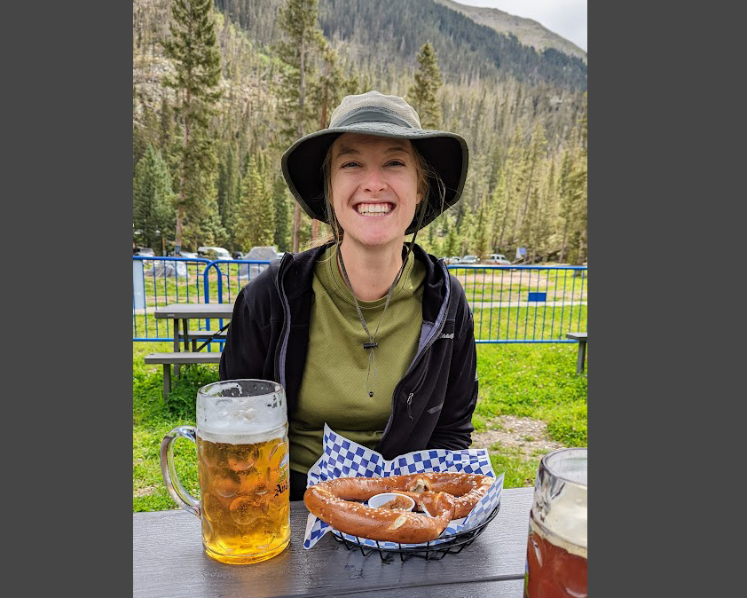

About Me
I'm a Ph.D. candidate focused on GIS, Remote Sensing, museum studies, and computer vision. My research has taken me to forests, archives, and labs around the world. I love combining digital technologies with the natural sciences to explore and explain the world around us. Click around the map to the right to learn more!